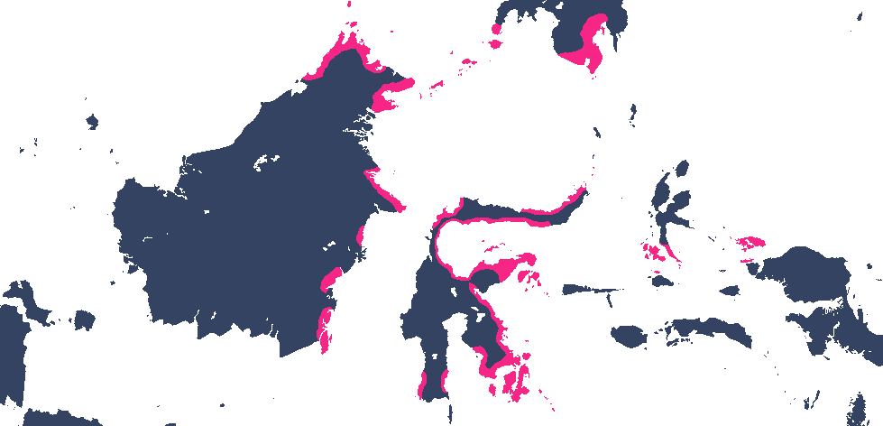

Learn about the Sama–Badjao people, their history, traditions, and the communities they have built across the seas. See how their way of life has been shaped by generations of living in harmony with the ocean.
The Sama–Badjao are an Indigenous maritime people who originated in the Sulu Archipelago in the southern Philippines. They developed a seafaring lifestyle centered on fishing and navigating coastal waters. Over time, their communities spread to nearby regions, including Sabah, Borneo, and parts of eastern Indonesia, while maintaining their ocean-based culture and traditions.
The Sama–Badjao have a distinct cultural identity shaped by their life at sea and close connection to the ocean. Their traditions, values, and social practices revolve around maritime life, fishing, and coastal communities. They speak Sinama, a language that preserves their heritage and connects Sama–Badjao communities across the Philippines, Malaysia, and Indonesia.
The Sama–Badjao are traditionally organized into close-knit, kin-based groups, living together on houseboats or in stilt homes along the coast. These communities foster strong family ties, cooperation, and shared responsibilities, reflecting their collective way of life centered on the sea.
Leadership in Sama–Badjao communities is guided by the panglima, a respected elder who mediates conflicts, makes important decisions, and ensures harmony within the group. The panglima’s authority is rooted in experience, wisdom, and the trust of the community, reflecting the Sama–Badjao’s collaborative and kin-based social structure.
The Sama–Badjao are a seafaring people who have settled across various coastal regions in Southeast Asia including Tawi-Tawi, Sulu, Basilan, Zamboanga, Borneo, and big parts of Eastern Indonesia

This website is a school project. All images and content are used strictly for educational purposes only.
Copyright belongs to their respective owners.